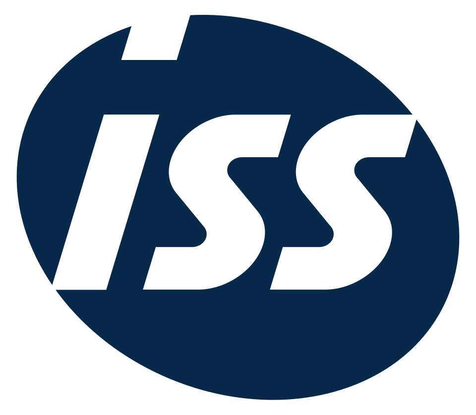

ISS A/S
ISS A/S는 1901년 덴마크 코펜하겐에서 설립된 시설 관리 서비스 기업이다. 보안, 청소, 기술, 식음료, 업무 공간 서비스를 핵심 사업으로 하며 본사는 Søborg에 있다.
최종 업데이트

ISS A/S는 어떤 브랜드인가
ISS는 International Service System의 약칭으로, 덴마크에서 출발한 시설 관리 서비스 기업이다. 핵심 서비스는 보안, 청소, 기술, 식음료, 업무 공간 분야이며, 유럽, 아시아, 북미, 중남미, 태평양의 여러 국가에서 사업 활동을 한다.
2020년 그룹 매출은 69.823 billion DKK였고 직원은 400,000명에 가까웠다. 2014년 OMX Nasdaq Copenhagen 증권거래소에 상장했으며, 이는 덴마크에서 최근 20년간 가장 큰 규모의 IPO였다.
2016년에는 IBM과 상업 계약을 맺고 IBM Watson의 사물인터넷 플랫폼으로 전 세계 25,000개가 넘는 건물의 관리를 바꾸기로 했다. 2017년에는 Deutsche Telekom과 회사 역사상 가장 큰 고객 계약을 체결했으며, 독일 전역 약 9,000개 사업장이 대상이다.
ISS A/S는 어떻게 시작되고 성장했나
회사는 1901년 덴마크 코펜하겐에서 야간 경비원 20명 규모의 작은 보안 회사로 출발했으며, 당시 이름은 København-Frederiksberg Nattevagt였다. 1934년 독립 자회사 Det Danske Rengørings Selskab를 세워 청소 사업으로 확장했다.
1946년 스웨덴 자회사를 설립했고, 1968년 현재 이름인 International Service System을 채택했다. 1973년 해외 확장을 시작해 1975년 글로벌 매출이 1 billion DKK를 넘었고, 1977년 코펜하겐 증권거래소에 상장했다.
1989년에는 그룹 직원 수가 100,000명에 이르렀다.
ISS A/S의 브랜드 아이덴티티는 무엇인가
야간 경비를 맡는 작은 보안 회사에서 출발해 청소, 기술, 식음료, 업무 공간까지 아우르는 종합 시설 관리 서비스 기업으로 성장한 덴마크 기업이다.
ISS A/S의 대표 제품과 서비스는 무엇인가
핵심 서비스는 보안, 청소, 기술, 식음료, 업무 공간이다. 주요 사업부로 CarePartner, Damage Control, Facility Services, Food Services, ISS Aviation을 두고 있다.
주요 자회사로는 ISS Europe A/S, ISS Services A/S, ISS Finans A/S, ISS Nordic A/S, ISS Overseas A/S가 있다. 2016년에는 기계·전기 공학, 에너지 관리, 규정 준수에 특화한 영국 기술 서비스 회사 GS Hall의 영국, 아일랜드, 유럽 사업을 인수했다.
2017년에는 미국 케이터링 서비스 회사 Guckenheimer를 인수했다.
ISS A/S는 지금 어떤 상태인가
2005년 EQT AB와 Goldman Sachs Alternatives가 자문하는 펀드에 인수되어 코펜하겐 증권거래소에서 상장 폐지되었고, 2014년 OMX Nasdaq Copenhagen에 다시 상장했다. 2012년에는 Ontario Teachers' Pension Plan과 Lego Group 소유주 KIRKBI Invest A/S가 EUR 500 million을 투자했다.
2020년 기준 그룹 매출은 69.823 billion DKK였고 직원은 400,000명에 가까웠다.
ISS A/S 로고는 어떻게 변해왔나
자주 묻는 질문
ISS A/S는 어느 나라 브랜드인가요?
ISS A/S는 덴마크의 브랜드·비즈니스 브랜드입니다.
ISS A/S는 언제 설립되었나요?
ISS A/S는 1901년 설립되었습니다.
ISS A/S의 브랜드 아이덴티티는 무엇인가요?
야간 경비를 맡는 작은 보안 회사에서 출발해 청소, 기술, 식음료, 업무 공간까지 아우르는 종합 시설 관리 서비스 기업으로 성장한 덴마크 기업이다.
ISS A/S의 대표 제품은 무엇인가요?
핵심 서비스는 보안, 청소, 기술, 식음료, 업무 공간이다.
ISS A/S는 어느 기업이 소유하고 있나요?
2005년 EQT AB와 Goldman Sachs Alternatives가 자문하는 펀드에 인수되어 코펜하겐 증권거래소에서 상장 폐지되었고, 2014년 OMX Nasdaq Copenhagen에 다시 상장했다.
ISS A/S의 본사는 어디에 있나요?
ISS A/S의 본사는 Søborg에 있습니다(위키데이터 기준).
ISS A/S의 공식 웹사이트는 어디인가요?
ISS A/S의 공식 웹사이트는 http://www.issworld.com/ 입니다.
출처와 검증
ISS A/S 관련 참고: 공식 웹사이트 · 위키데이터 Q689791 · 영어 위키백과. 브랜드명은 한글과 원어를 함께 표기하되 데이터에 없는 표기는 만들지 않습니다. 기원 국가·설립연도는 검수된 정의문에서 확인된 값을 우선하고, 없을 때만 공식 웹사이트 URL이 일치하는 위키데이터 개체의 값을 씁니다. 위키데이터 값은 2026-11-14 기준입니다.